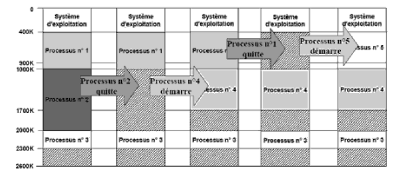

1.Définition et principe
C'est une partie de la technique d'allocation contiguë de la multiprogrammation. au démarrage du système,la mémoire est divisée en n partitions de tailles fixes (si possible inégales).Chaque partition peut être allouée à un programme de taille inférieure ou égale à la taille de la partition. C’est un mécanisme simple soufrant de la fragmentation interne.
Cette organisation consiste à gérer plusieurs files d'attente, une file pour chaque partition de la mémoire. Quand un processus arrive, il peut être placé dans la file d'attente des entrées de la plus petite des partitions assez larges pour le contenir.
2.Notions à comprendre
a.Partition
Memory partitioning is the system by which the memory of a computer system is divided into sections for use by the resident programs. These memory divisions are known as partitions
b.Fragmentation interne :
Soient un programme de taille M et une partition de taille N (partition fixe). Si la partition est allouée au programme avec N>M alors la partie non occupée par le programme est appelée fragmentation interne.
c.Fragmentation externe :
Soit un programme de taille M. Si toute partition libre est de taille Pi telle que Pi est inférieure à M alors le programme ne peut être chargé dans aucune partition libre alors que : On dit qu'il y a fragmentation externe. La mémoire est fragmentée en un grand nombre de petits trous.
3.Structures intervenants
a.La table d’etat :
Le système d'exploitation maintient une table de description des partitions. Cette table contient les caractéristiques de chaque partition : l’identificateur, l'adresse début, la taille et l'état (libre/occupée).

b.La file d’attente séparée:
C’est une structure de file contenant les processus chargés par l’utilisateur
4.Etapes d'éxecution
a.la recherche
Le rôle de cette première étape est de trouver la plus petite partition vide et assez large pour contenir le processus, en utilisant la table d'état et en comparant toutes les tailles des partitions libres avec la taille du processus.
b. l'enfilement
Lorsque la partition choisie devient libre, le processus qui se trouve dans la tête de la file va être défilé.
c.l'insertion
-C'est l'ajoute de processus dans une partition dans la mémoire centrale dans l’emplacement retourné par l'opération de recherche.
-a la fin de l’insertion son temps d’execution se lance
d.la libération
Après la fin de l'exécution du processus, ce dernier quitte la partition elle devient libre et capable de recevoir un nouveau processus.